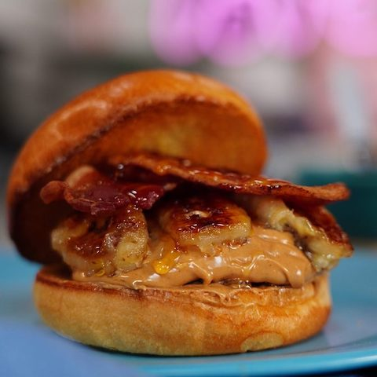

Beef Enchiladas with Flour Tortillas

Beef Enchiladas with Flour Tortillas
Simple and quick beef enchiladas. Ground beef and onion are wrapped in flour tortillas, topped with Cheddar cheese and black olives, then baked. This is also great with leftover chicken, shredded beef or turkey. Serve with a green salad or beans and rice.
Ingredients
- 1 pound lean ground beef
- 1 small onion, chopped
- 1 (1.5 ounce) package dry enchilada sauce mix
- 10 (10 inch) flour tortillas
- 2 cups shredded Cheddar cheese
- 1 (2.25 ounce) can sliced black olives, drained
Steps
- Preheat oven to 350 degrees F (175 degrees C). In a medium skillet over medium high heat, cook the ground beef and onion until beef is evenly browned and onion is tender.
- Prepare the enchilada sauce according to package directions. Pour 1/4 cup of the sauce into the bottom of a 9x13 inch baking dish.
- On each flour tortilla, place an equal portion of the ground beef mixture and about 1 ounce of Cheddar cheese, reserving at least 1/2 cup of cheese. Then tightly roll the tortillas and place seam side down in the baking dish.
- Pour the remaining sauce over the top of the enchiladas and sprinkle with the remaining cheese and olives.
- Bake in a preheated oven for 20 minutes, or until the sauce is bubbly and cheese is thoroughly melted.

The Elvis Peanut Butter Banana Burger
You've never had a burger quite like this before. Legend has it Elvis loved his peanut butter, bacon, and banana sandwiches, so we created this salty, sweet burger as a tribute to the king of rock 'n' roll. Piled high with creamy peanut butter, extra-crispy bacon, caramelized bananas, and a sweet honey drizzle, this totally unique combination of flavors will have you all shook up. Whether you grill the patties or cook them smash burger-style on the stovetop, these burgers will be a hunk of burning love at your cookout.
Ingredients
- 6 hamburger buns, split
- 3 tablespoons butter
- ½ pound bacon
- 3 bananas
- ½ cup white sugar
- 6 hamburger patties
- salt and ground black pepper to taste
- ½ cup creamy peanut butter, warmed
- 2 tablespoons honey
Steps
- Heat a griddle over medium heat. Butter the inside slices of each burger bun, then toast in the skillet until golden brown, 2 to 3 minutes. Set aside.
- Heat a large skillet over low heat; pan-fry the bacon for 2 minutes, then increase heat to medium-high and continue to pan-fry until crispy, 5 to 7 minutes, turning often. Drain on paper towels and discard most of the bacon grease.
- Cut each banana lengthwise into long slices, about 4 inches in length. Pour the sugar into a small bowl, then add in the banana slices to coat both sides in sugar. Fry the banana slices in the same skillet over medium heat until caramelized, 2 to 3 minutes.
- Cook the burgers on a griddle over medium-high heat for 3 to 4 minutes per side, seasoning with salt and pepper. Press down firmly with a spatula to flatten the patties as they cook. A thermometer inserted into the center should read at least 160 degrees F (71 degrees C).
- To assemble the burgers, lay down the bottom half the burger bun and spread on 1 tablespoon peanut butter. Place a burger patty on top, then add another tablespoon of peanut butter. Top with 2 to 3 slices of caramelized bananas, then 2 to 3 pieces of bacon. Drizzle with 1 teaspoon honey, then place the remaining burger bun on top.
Chicken with Lemon-Caper Sauce
A rich lemon sauce for chicken makes this dish perfect for a special meal.
Ingredients
- ½ cup all-purpose flour
- 1 pinch salt
- 2 (6 ounce) skinless, boneless chicken breast halves
- 2 tablespoons olive oil
- ¼ cup dry white wine
- ¼ cup lemon juice
- ¼ cup cold unsalted butter, cut into pieces
- 2 tablespoons capers, drained
- 2 lemon wedges
Steps
- Mix together flour and salt in a medium dish or resealable plastic bag. Coat chicken in flour mixture; shake off excess.
- Heat olive oil in a skillet over medium-high heat. Cook chicken in hot oil until golden brown and cooked through, 3 to 4 minutes per side. An instant-read thermometer inserted into the center should read at least 165 degrees F (74 degrees C). Transfer chicken to a plate; cover and keep warm.
- Pour white wine into the skillet; allow to boil while scraping the cooked bits from the bottom of the pan. Add lemon juice; boil until reduced by half, 2 to 3 minutes.
- Sprinkle cubed butter into boiling sauce. Swirl and shake the pan vigorously until butter is completely incorporated and sauce thickens. (Butter must never come to rest, or sauce will separate and become oily.) Remove from heat and stir in capers.
- Pour lemon-caper sauce over chicken; serve with lemon wedges.